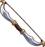

Archery
Bows. A bow shoots the arrows you carry in your off hand; coloured arrows hit harder.
Level guide
| Level | Unlock | |
|---|---|---|
| 1 | Shoot Blue Arrows (+3 damage) | |
| 1 | Shoot Green Arrows (+4 damage) | |
| 1 | Shoot Purple Arrows (+5 damage) | |
| 1 | Shoot Red Arrows (+2 damage) | |
| 1 | Shoot White Arrows (+0 damage) | |
| 1 | Shoot Yellow Arrows (+1 damage) | |
| 1 | Wear White Arrows | |
| 1 | Wield a Wooden Bow | |
| 10 | Wear Yellow Arrows | |
| 10 | Wield a Wooden Crossbow | |
| 20 | Wear Red Arrows | |
| 20 | Wield a Crossbow | |
| 25 |  | Wield a Steel Bow |
| 30 | Wear Blue Arrows | |
| 40 | Wear Green Arrows | |
| 40 | Wield a Silver Crossbow | |
| 55 | Wear Purple Arrows |